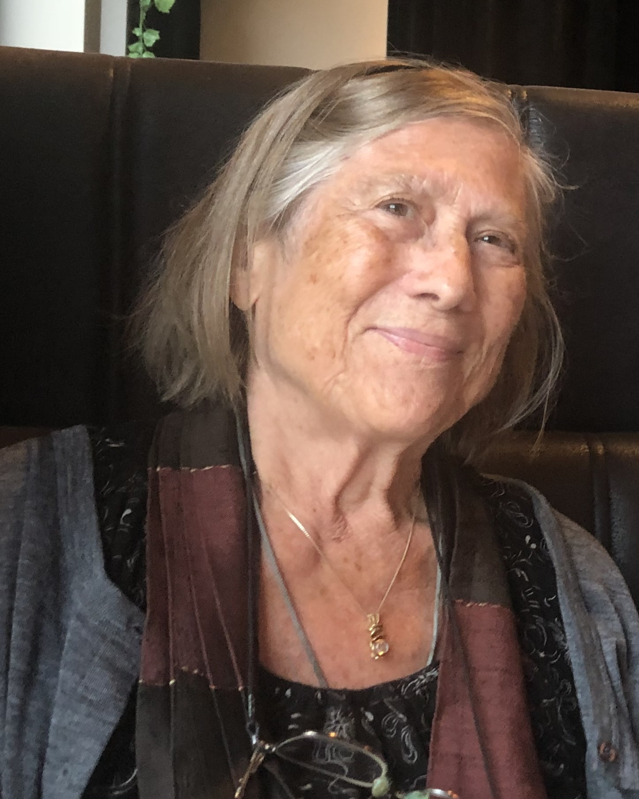

Det gode medmenneske Hilma Birgit Sørebø Lauvland i Kristiansand, født 27/2 1937, gikk bort mens hun sov natten 26/2. Det skjedde på Tveit omsorgssenter døgnet før hun ville fylt 88 år, og bare 2 dager etter at hun kom dit fra leiligheten sin i Østre Strandgate 24.
Hilma var gift med den kjente Sørlandsarkitekten Arild Lauvland fra Arendal som hun møtte i Trondheim i studietiden. Han i arkitektstudier ved NTH og hun i barnevernstudier ved Dronning Mauds Minne og Frøken Vatnes barnevernsinstitutt. Dette gav retning for hennes yrkesvalg som etter hvert førte henne som spesialpedagog til Birkelid kompetansesenter for barn med lærevansker i Songdalen. Dette var en av de regionale spesialskoler staten støttet opp om i perioden 1957 til 1992 og som Hilma mente aldri skulle vært avviklet. Oppfatningen ble da at disse barna som hun brant så for, skulle integreres i de vanlige skoleløpene. I dagens debatt ser vi nå at spesialiserte kompetansesentra snart vil komme tilbake, i første omgang i Oslo og Bergen.

Hilma og Arild delte interessene for natur og kunst og gode åpne bomiljøer som deres eget hus på Gimlekollen. Alt fra studietiden mislikte de at så mange eneboliger ble bygget med flate tak. Før dette bodde de med sine fem barn på Bjørnestad i Randesund. Det begynte med et småbruk, som de utviklet til et gedigent hjem med flotte arkitekttegnete møbler, håndtrykte tekstiler, japaninspirert keramikk, bokhyller fra gulv til tak og et piano sentralt plassert i stua. Kort vei var det til nærmeste fiskevann lenger inne i skogen der guttene Are, Rune og Yngve fisket skjebber og ål, en skog som bød på et rikt dyre- og fugleliv. Den som gikk seg vill inne i det småkuperte landskapet kunne plutselig komme til et hemmelig sted, en lysning der skogen åpnet seg og alt var fredfullt.
Dessverre ble livet for Hilma og Arild det motsatte av fredfullt etter hvert. Før ved kveldsmaten da mor og far og alle de fem barna, guttene og Gro og Hege var samlet rundt kjøkkenbordet hadde det vært tull og tøys og fløytespill og latter og glede. Senere på Gimlekollen ble først Yngve så Are rammet av ukjent og mystisk sykdom som tok de unge livene deres i deres beste år, til foreldrenes og barnas dype fortvilelse. Så døde Arild fra Hilma i 2017 etter gradvis å ha mistet taleevnen.
Men Hilma var en tøffing som tok livet som det kom. I smerten over tapene klaget hun aldri. Barndommen på gården i Sørbøvåg ytterst i Åfjorden, en sidegren av Sognefjorden, hadde herdet henne og hun beholdt sitt engasjement, sin markante dialekt og sin gode kristne tro livet ut.
Kirsten og Thor Einar Hanisch